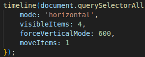
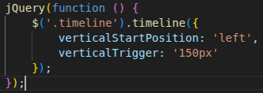

Advanced — JavaScript

Programmatic rendering, dynamic theming, API fetch handling, Swiper integration, and teardown patterns using vanilla JS helpers.
Advanced — jQuery

jQuery usage for the same advanced flows as Javascript. Use jQuery for initialization and applying theming, using Swiper, teardown, and re-init.